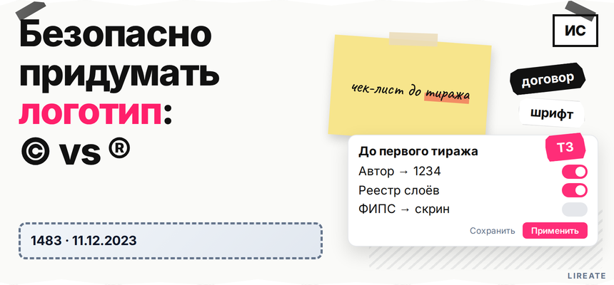
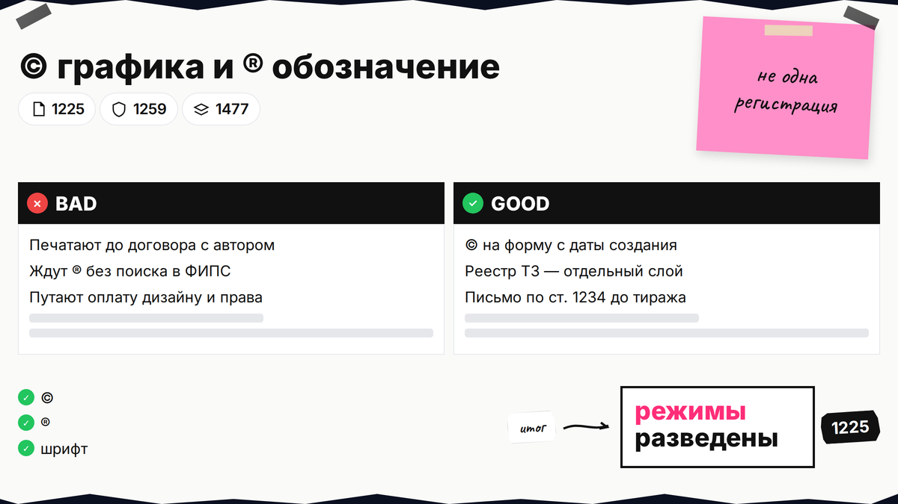
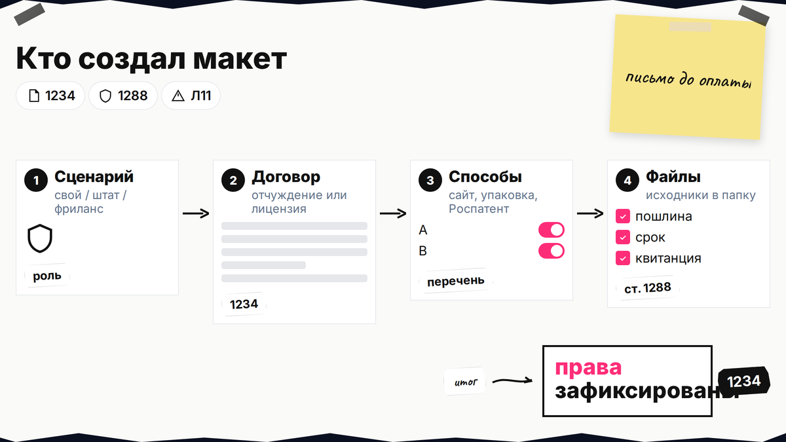
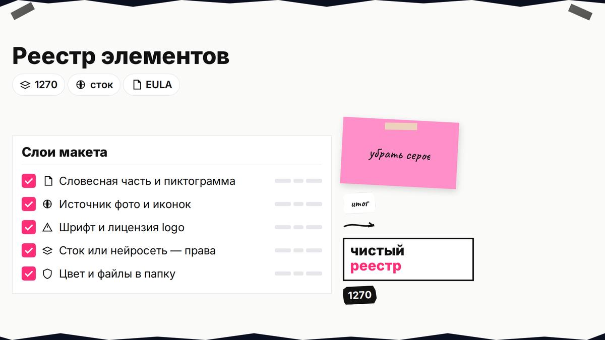

Логотип на визитке ещё не ваш по закону: у рисунка - авторское право, у названия на вывеске - товарный знак, у букв - лицензия на шрифт. Ошибка на эскизе грозит претензией по ст. 1301 ГК РФ или отказом в Роспатенте. Вы пройдёте правовой чек-лист до первого тиража: права автора, чистота картинок, шрифт, поиск сходства и папка доказательств. Нормы на 18.11.2026; не индивидуальная консультация.

TL;DR / Быстрый инсайт: Авторское право на логотип как графику возникает с создания, регистрация не обязательна (ст. 1259 ГК РФ); товарный знак даёт монополию только после внесения в реестр (ст. 1477). Оплата дизайнеру без письменного отчуждения или лицензии (ст. 1234) оставляет права у автора. Делайте: пять слоёв проверки - договор/автор → реестр чужих картинок и стоков → лицензия шрифта → поиск в Поисковой платформе ФИПС → папка файлов. Не делайте: печатать тираж и подавать заявку, пока нет чеков на шрифт и скринов поиска с датой.
Слово "безопасно" здесь - про снижение рисков по авторскому праву и товарному знаку, а не гарантию регистрации. Если вы заказываете знак у подрядчика, детальный договор разбираем в материале о договоре с дизайнером; если экспертиза уже отказала - в гайде по доработке логотипа; согласование имени и картинки - в статье про нейминг и логотип.

Авторское право (символ ©) охраняет конкретную форму: рисунок, компоновку, подбор линий. Товарный знак (символ ® после регистрации) защищает обозначение, под которым вы продаёте товары и услуги в выбранных классах МКТУ. По ст. 1225 ГК РФ это разные режимы: можно зарегистрировать ТЗ, но проиграть спор автору чужого шрифта внутри знака.
Делайте: для каждого будущего элемента запишите, каким правом он закрывается. Не делайте: ставить © на файл и считать, что Роспатент "автоматически" согласится с дизайном.
| Инструмент | Что реально защищает | Чего не хватает без договора/реестра |
|---|---|---|
| Символ © на макете | Фиксация года и автора произведения | Не передаёт права от фрилансера заказчику |
| Свидетельство ® на ТЗ | Исключительное право на обозначение в классах МКТУ | Не снимает претензии по шрифтам, стокам и чужим иллюстрациям внутри знака |
| Договор с дизайнером | Письменное отчуждение или лицензия по ст. 1288 | Не заменяет покупку Logo-лицензии на коммерческий шрифт |

Сценарий решает первый слой чек-листа: вы рисуете сами, работает штатный дизайнер или фрилансер. Если подрядчик - до ТЗ на дизайн откройте чек-пункты из L11: отчуждение по ст. 1234 или лицензия с перечнем способов (сайт, упаковка, реклама, подача в Роспатент, передача типографии).
Делайте: в договоре заложить гарантию свободы от прав третьих лиц и реестр источников. Не делайте: начинать финальный макет без подписанного акта с версией файла.

Распишите будущий логотип таблицей: словесная часть, пиктограмма, фон, шрифт, сток/нейросеть, охраняемый цвет. Для каждой строки - источник и основание (свой труд, лицензия, отчуждение). Чужие фото из поиска, иконки "как у известного бренда", куски чужих логотипов - высокий риск по ст. 1270 (воспроизведение и переработка).
Для стока и нейросети сохраните PDF лицензии с формулировками commercial и, где нужно, logo или trademark. Делайте: хранить чек и номер лицензии рядом с файлом. Не делайте: менять чужую картинку "на глаз" и считать это оригиналом.
У коммерческих гарнитур часто Desktop-лицензия разрешает макет в студии, но не публичный логотип на витрине без отдельной Logo или "Лого"-опции (см. практику вендоров TypeType, ParaType). Перевод букв в кривые в Illustrator не отменяет договор с правообладателем гарнитуры.
Делайте: скачать EULA, найти пункты logo / branding / trademark; при пробеле - купить Logo-лицензию или сменить гарнитуру. Не делайте: брать "бесплатный" шрифт с каталога без чтения условий: часто запрещена коммерческая знаковая отрасль.
С 11.12.2023 действует бесплатная Поисковая платформа ФИПС 24/7 (ГАРАНТ): текстовый поиск по словесной части и изобразительный по файлу JPG/TIFF (обычно до ~3 МБ). Сходство смотрят по визуалу, звучанию, смыслу и общему впечатлению, а не только по буквам; для классов МКТУ ориентируйтесь на п. 6 ст. 1483 (однородные товары).
Делайте: сохранить скриншоты выдачи с датой и списком близких знаков. Не делайте: трактовать один "чистый" поиск как гарантию: экспертиза по п. 9 ст. 1483 не ищет все произведения автоматически.
Даже "уникальный" рисунок могут не зарегистрировать, если он только описывает товар (п. 1), вводит в заблуждение (п. 3) или слишком похож на известное произведение без согласия правообладателя (п. 9). Тревожные совпадения с известным персонажем, цитатой или чужим знаком - повод к доработке макета, а не к тиражу упаковки.
Делайте: согласовать словесный элемент с названием бренда до финального пиктограммы - алгоритм в L64. Не делайте: печатать визитки и вывеску, пока поиск показывает близкие ТЗ в ваших классах.
Схема пяти слоёв:
Кто автор и договор → реестр картинок/стоков/AI → EULA шрифта → Поисковая платформа (слово + картинка) → папка доказательств → только потом тираж и заявка
Делайте: одну папку на Google Диске или в корпоративном архиве с правами только у юриста и маркетинга. Не делайте: хранить только PNG в чате с дизайнером.
Минимальный комплект: договор/акт, реестр элементов, EULA и чеки на шрифты, лицензии стока и AI, скриншоты Поисковой платформы, исходники. После этого можно запускать тираж, домен с логотипом и подготовку заявки на ТЗ. Если поиск показал сходство или описательность - сначала правки макета, а не пошлины.
Опишите ситуацию в Telegram Лирейт - подскажем, куда двигаться: договор, доработка или согласование имени и знака. За компенсацией по авторскому праву закон задаёт вилку 10 000-10 000 000 ₽ или двукратную стоимость использования (ст. 1301) - проще не доводить до претензии.
Материал проверен: редакция Лирейт, практика оформления логотипов и заявок на товарные знаки.
Достоверность данных: ст. 1225, 1259, 1270, 1288, 1234, 1477, 1483, 1301 ГК РФ и сведения о Поисковой платформе ФИПС сверены с КонсультантПлюс и ГАРАНТ на ноябрь 2026 года; лицензии шрифтов - по открытым EULA вендоров.
© напоминает о авторском праве, но не передаёт исключительное право от фрилансера и не заменяет регистрацию ТЗ. Добавьте договор с дизайнером и, при цели - монополия на рынке, заявку в Роспатент.
Нет: переработка без согласия автора попадает под риск по ст. 1270 и ст. 1301. Закажите оригинал, купите сток с правом logo/trademark или используйте свой эскиз.
Только если EULA прямо разрешает коммерческий логотип. Многие "free" гарнитуры ограничивают брендинг - прочитайте файл лицензии, а не название на сайте.
Нет: правообладатель шрифта остаётся. Кривые лишь технически фиксируют контур; для суда важна купленная Logo-лицензия или свободная гарнитура.
Нет: реестр ТЗ не проверяет все произведения и шрифты. Отдельно ведите реестр элементов и договор с автором макета.
Только при письменном отчуждении или лицензии. Оплата счёта без ст. 1234 оставляет права у автора - оформите договор до печати.
Не всегда: оценивайте однородность товаров и риск смешения. При сомнении сохраните поиск и обсудите доработку до тиража.